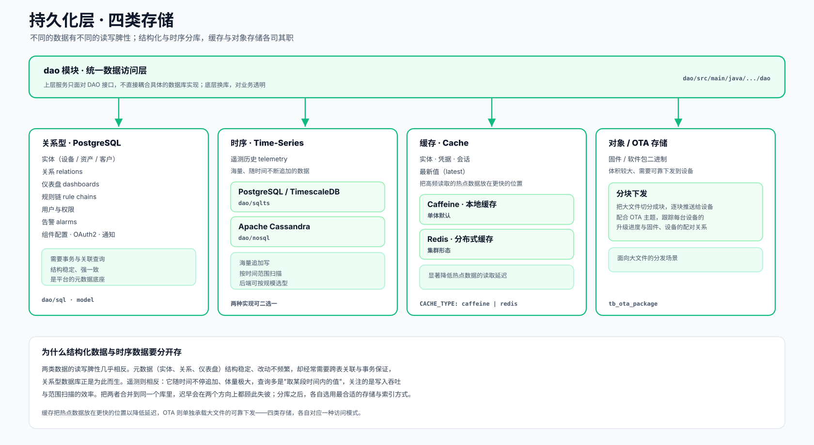

这一层在做什么
上层的服务并不直接面对具体的数据库，而是统一通过 dao 模块的接口来读写数据。这层抽象的好处很直接：底层换库、或在不同存储后端之间切换，对业务代码而言是透明的。开发者面对的始终是"保存这条遥测""查出这个实体"这样的语义，而非某个数据库的方言。
抽象之下，数据被分流到四类存储里。这种分流并非随意为之，而是顺着每类数据自身的特点来安排——结构化的元数据、不断追加的时序、需要加速的热点、以及体积庞大的固件，各自交给最擅长处理它的那种存储。
内部结构
上方是统一的 dao 访问层，下方四类存储各自承接一类数据，并标注了它们各自的访问模式。

四类存储，逐一拆开
关系型 · PostgreSQL 元数据底座
存放平台的结构化元数据：设备、资产、客户等实体，实体之间的关系，仪表盘、规则链、用户与权限、告警、组件配置等等。这类数据结构稳定、改动不频繁，却经常需要跨表关联与事务保证，关系型数据库正合用。
dao/sql · model时序 · Time-Series 遥测历史
承接随时间不断追加的遥测数据。它有两种可选的后端：基于 PostgreSQL 或 TimescaleDB 的实现，以及基于 Apache Cassandra 的实现，可按规模二选一。关注点落在海量追加写与按时间范围扫描的效率上。
dao/sqlts（关系型时序） · dao/nosql（Cassandra）缓存 · Cache 加速
把实体、凭据、会话、最新值这类高频读取的热点数据，放在更快的位置。单体形态默认使用进程内的 Caffeine 本地缓存；集群形态则换成 Redis 分布式缓存，由多个实例共享。
CACHE_TYPE: caffeine | redis对象 / OTA 存储 大文件
存放固件与软件包这类体积较大的二进制文件。下发时把大文件切分成块，逐块推送给设备，并配合 OTA 主题跟踪每台设备的升级进度，以及固件与设备之间的配对关系。
tb_ota_package为什么结构化数据与时序数据要分库
这两类数据的读写脾性几乎相反。元数据——实体、关系、仪表盘——结构稳定、改动不频繁，但经常需要跨多张表做关联查询，并且要求事务来保证一致性，这正是关系型数据库的拿手好戏。
遥测则走在另一个极端：它随时间源源不断地追加，体量极大，而查询多半是"取某一段时间内的值"这种形态，真正在意的是写入的吞吐与范围扫描的效率。把这两类数据合并到同一个库里，迟早会在两个方向上都顾此失彼——为关联查询优化的结构，未必扛得住海量追加；为追加写优化的结构，又难以胜任复杂关联。分库之后，各自选用最合适的存储引擎与索引方式，两边都能从容。
在整条链路中的位置
持久化层是上行数据的终点。规则链处理完的遥测与属性，最终在这里沉淀下来。
在总览页的端到端数据流里，规则链中的存储节点把遥测写入时序库、把属性写入关系库，对应的正是数据抵达这一层的那一跳。数据在这里落定之后，既成为历史查询的依据，也通过缓存与 EDQS 的索引，支撑起仪表盘上那些实时与回溯的视图。
源码位置
关系型与模型
结构化实体的数据访问与实体模型。
dao/sql · dao/model时序存储
两种时序后端的实现，可二选一。
dao/sqlts · dao/nosql缓存与配置
缓存类型与各类参数的配置项。
common/cache · thingsboard.yml